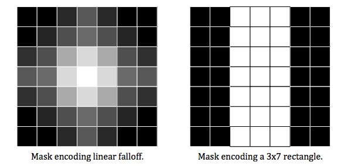

Adding a New Brush
When you want to add a new tool, first you have to create a new class that inherits from the Tool class.
You can easily learn how to do this by reading other tool class, like pen or highlighter. After creating the .cpp and
.h files for the new brush, you have to think about the shape of the pen and how to apply the color to canvas
when the brush is used.
Mask
During the first iteration, we decided to use the mask to represent the shape of the brushes. A mask is simply a
2D array of floats. We suggest you set the width and height to odd numbers so that it becomes easier to
identify the center of the mask.
The following images show how masks look like(from Iteration1_Requirements.pdf):

In the example masks, each mask here is 7 pixels wide by 7 pixels high.
Each element in the mask array is colored according to a gray scale
value, where 0.0=black and 1.0=white. You may want to set it to 0.4 if you want to get lighter color. The mask on the right
looks like what we used for the calligraphy pen tool.